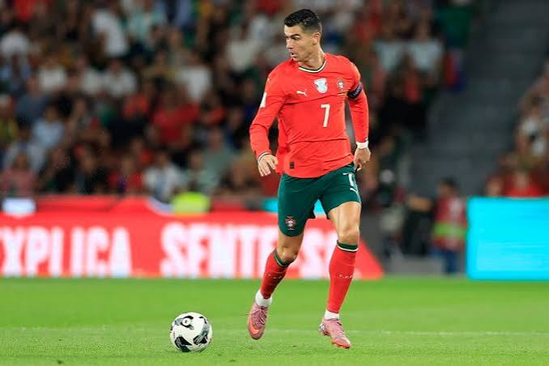
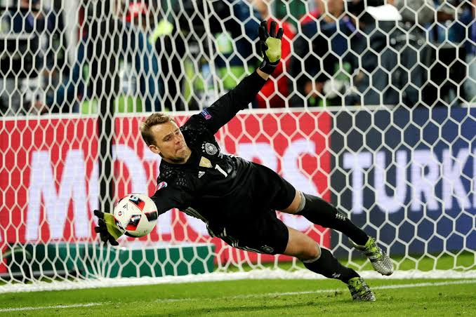

Soccer Tactics
Tactical knowledge helps players make smarter decisions before receiving the ball and understand their role within the team's system.
Learn how professional players move, defend, attack, and create space based on the position they play. Each section below focuses on a different area of the field.

Forwards
Learn attacking movement, finishing, pressing, making runs behind defenders, positioning inside the box, and creating scoring opportunities.
Watch AnalysisMidfielders
Improve vision, scanning, passing angles, controlling the tempo, creating chances, and supporting both attack and defense.
Watch Analysis
Defenders
Study positioning, marking, tackling, communication, defensive shape, and building out from the back.
Watch Analysis
Goalkeepers
Learn shot stopping, positioning, distribution, communication, commanding the penalty area, and reading the game.
Watch Analysis